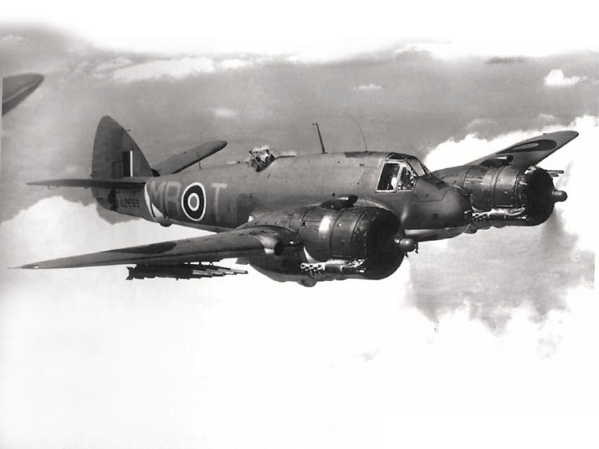

В серии тяжелых двухпилотных истребителей Bristol Beaufighter были модификации, разработанные для патрулирования прибрежных регионов и сопровождения конвоев судов. Названии модификаций таких самолетов оканчивались на букву C, чтобы подчеркнуть, что они использовались береговой охраной (Coastal Command). Первая модификация для береговой охраны появилась в 1940 году и имела обозначение Beaufighter Mk.IC, в которой ценой удаления крыльевых пулеметов были добавлены дополнительные бензобаки в консоли крыла объемом 227 литров на правом крыле и 109 литров на левом. Следующая модель, в которой двигатели были заменены на Hercules Mk.VI мощностью 1650 л.с., начала производиться в ноябре 1941 года и получила название Beaufighter Mk.VIC.
К концу 1942 года большинство Beaufighter Mk.VIC были модифицированы в торпедоносцы, а в апреле 1943 года совершили первую торпедную атаку, потопив два торговых судна у побережья Норвегии.
Всего было построено 5 928 самолетов серии Beaufighter.